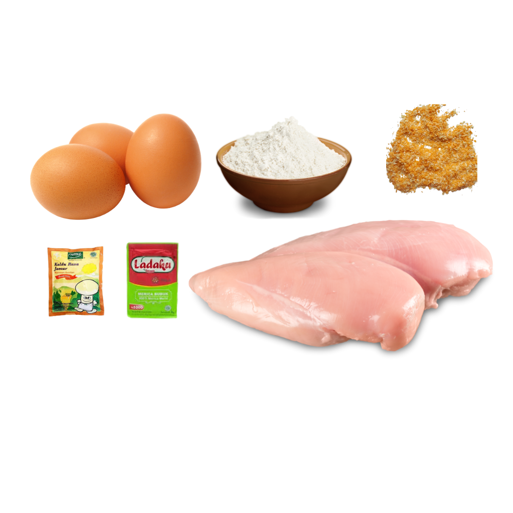

Bahan:
- Ayam Fillet
- Tepung Roti / Panir
- Telur
- Tepung Terigu / Serbaguna
- Penyedap Rasa
Cara Membuat:
- Cuci bersih ayam, lalu tusuk-tusuk ayam dengan garpu
- Marinasi ayam dengan penyedap rasa, rasakan
- Baluri ke telur atau tepung terigu
- Baluri ke tepung roti / panir
- Bisa langsung di goreng atau dimasukkan ke kulkas terlebih dahulu

NB: Bisa dibalurkan dengan telur atau tepung serbaguna